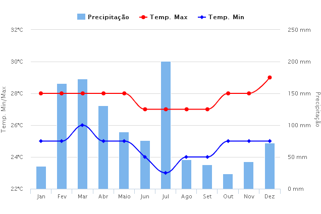
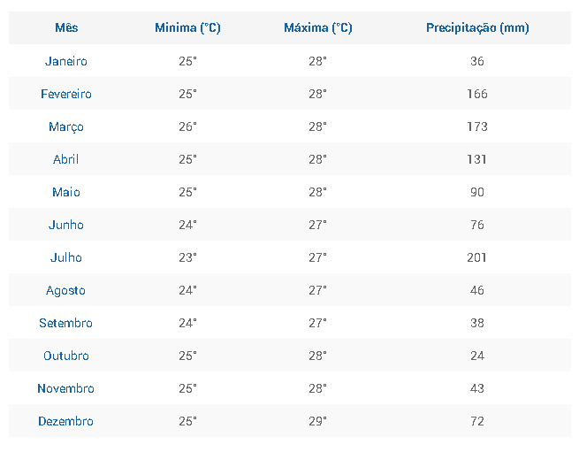

Macaíba - RN
Os dados apresentados representam o comportamento da chuva e da temperatura ao longo do ano.
As médias climatológicas são valores calculados a partir de um série de dados de 30 anos observados.

